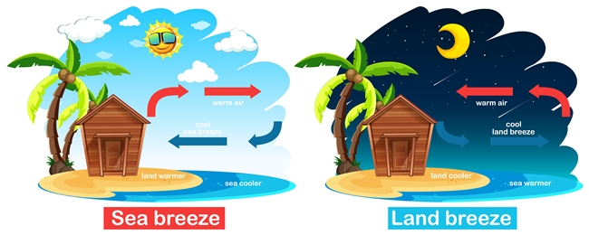

ผู้จัดทำ
ด.ญ.กัญญาภัค เดชประทุม เลขที่ 20 ป.6/1
SCIENCE
วิทยาศาสตร์ หมายถึง
ความรู้เกี่ยวกับสิ่งต่าง ๆ ในธรรมชาติทั้งที่มีชีวิตและไม่มีชีวิต รวมทั้งกระบวนการประมวลความรู้เชิงประจักษ์ที่เรียกว่ากระบวนการทางวิทยาศาสตรและกลุ่มขององค์ความรู้ที่ได้จากกระบวนการ
หลักการทาง วิทยาศาสตร์
STEM
S ย่อมากจาก Science หรือ วิทยาศสตร์
T ย่อมาจาก Technology หรือ เทคโนโลยี
E ย่อมาจาก Engineer หรือ วิศวกรรม
M ย่อมาจาก Math หรือ คณิตศาสตร์
ขั้นตอนทางวิทยาศาสตร์ มี 5 ขั้นตอน
1.สังเกตและระบุปัญหา
2.ตั้งสมมุติฐาน
3.ทำการทดลองหรือทดสอบสมมติฐาน
4.เก็บรวบรวมข้อมูลและวิเคราะห์ข้อมูล
5.สรุปผลการทดลอง
ลมบก ลมทะเล (เรื่องที่เลือกมายกตัวอย่าง)
ลมบก ลมทะเล หรือ มีอีกชื่อคือ ลมประจำถิ่น ลมประจำเวลา

ลมบก land breez

ลมบกเป็นลมที่เกิดขึ้นในตอนกลางคืน โดยลมบกนั้นจะมีการเกิดที่ตรงกันข้ามกับลมทะเล คือ ในตอนกลางคืนพื้นดินสามารถคายความร้อนได้ดีกว่าพื้นน้ำ ทำให้อากาศบริเวณพื้นดินมีอุณหภูมิต่ำกว่าพื้นน้ำทะเล ดังนั้น อากาศจึงเย็นกว่าและมีความกดอากาศสูงกว่า ขณะที่พื้นน้ำซึ่งคายความร้อนได้ช้ากว่าพื้นดินมีอุณหภูมิสูงกว่า อากาศมีความหนาแน่นน้อยกว่า จึงลอยตัวขึ้นสูง และอากาศเย็นจากพื้นดินเคลื่อนเข้าแทนที่ ทำให้เกิดลมบก ซึ่งเป็นลมที่เกิดจากการพัดจากชายฝั่งไปยังทะเลนั่นเอง
ลมทะเล sea breez